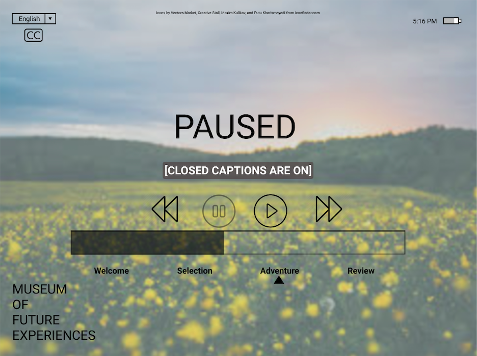
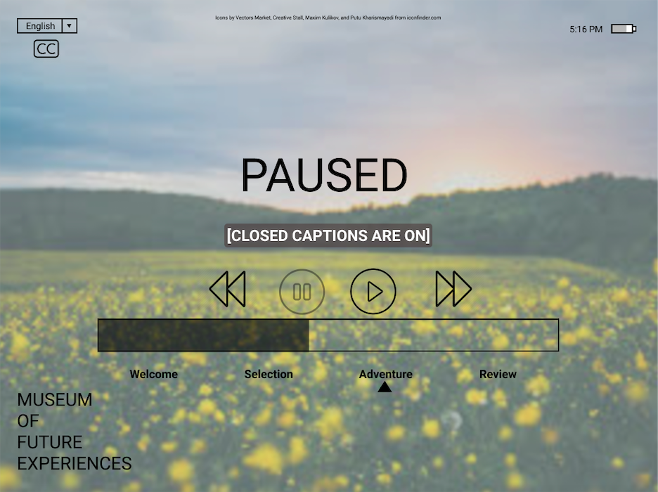

Iterative Design: a VR Interface
The Task
My group and I were tasked with designing an interface for a startup of our choice. We selected the Museum of Future Experiences (MoFE), a startup in NYC that creates four custom virtual reality adventures for each customer. Visitors select one each time they come to the museum, and are immersed in an hour-long experience meant to encourage self-reflection. Intrigued by the challenge of designing for VR, we decided to design their headset interface.
The Process
First, we sketched four different designs in Balsamiq. Then, we selected the design that seemed to most intuitive. We created high-fidelity, interactive mockups in Figma. Our mockups were reviewed in a class critique session, where we recieved feedback indicating that certain aspects of our design were unclear (for instance, that a user could not go back and select another journey). We remedied that by adding a modal dialogue after a user clicks on an adventure asking them to confirm their choice.
Feedback
I submitted our interactive mockup to UserTesting.com, and wrote a series of prompts and questions to elicit feedback. We saw that the users had some confusion about which elements were interactive and which were not, such as trying to use the bottom bar indicating where they were in the onboarding process to navigate. They also suggested that incorporating instructions at the beginning of the actual VR experience would have been a more interesting and more helpful way to offer onboarding.
Takeaways
Having done this assignment, I am more able to appreciate the value of user testing. While previously it had seemed that we would be able to guess how people would perform and the interface seemed straightforward to us, we had background knowledge that users will not have. Additionally, I learned that it's best to combine functionality and visual representation as best as possible (for example, instead of having a fast forward button and a progress bar, have a progress slider). Starting with one carefully-selected design and iteratively improving it through feedback seems like the best approach to creating a design from scratch.
 
